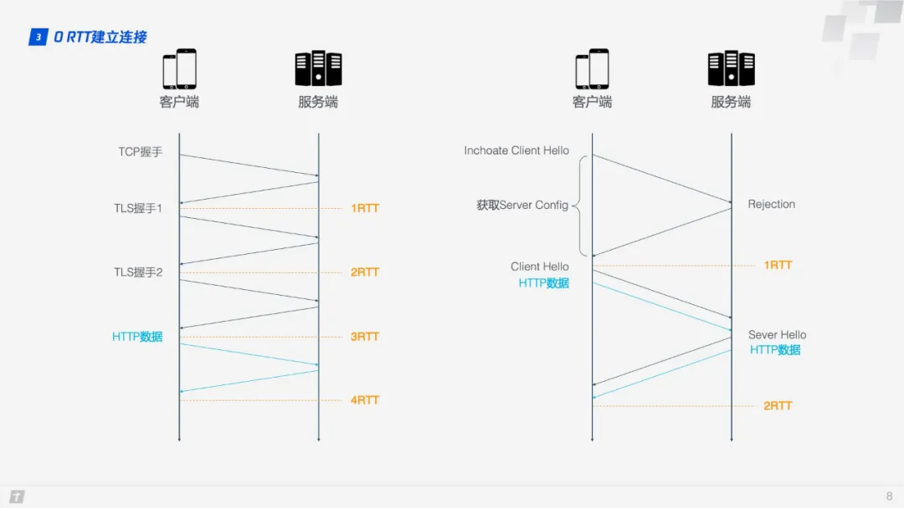

HTTP
HTTP：HyperText Transfer Protocol 超文本传输协议。
1. HTTP协议用于客户端和服务端之间的通信
客户端发出请求，服务端响应该请求并返回。
请求报文是由请求方法、请求URI、协议版本、可选的请求首部字段和内容实体构成的。
响应报文基本上由协议版本、状态码、用以解释状态码的原因短语、可选的响应首部字段以及实体主体构成。
2. HTTP是不保存状态的协议
HTTP/1.1虽然是无状态协议，但为了实现保持状态的功能，引入了Cookie技术。
3. 请求URI定位资源
4. HTTP历史
HTTP/0.9
HTTP 完成于1990年，1991年8月16日，Tim Berners-Lee 在公开的超文本新闻组上发表的文章被视为是万维网公共项目的开始
HTTP/1.0
HTTP正式作为标准被公布是在1996年的5月
HTTP/1.1
1997年1月公布的HTTP/1.1是目前主流的HTTP协议版本

HTTP/0.9
HTTP最早大规模使用的版本，现已过时。传输体积很小的文件，在这个版本中只有GET一种请求方法，在HTTP通讯也没有指定版本号，也不支持请求头信息。服务端发送完毕，就关闭TCP连接。
请求：由单行指令构成，以唯一可用方法GET开头，其后跟目标资源的路径
GET /index.html
响应：只包含响应文档本身
<HTML>
这是一个非常简单的HTML页面
</HTML>
HTTP/1.0
支持多种类型的文件下载。在HTTP通信中指定版本号。支持：GET、POST、HEAD三种HTTP请求方法。
- 增加了新的请求方法，POST, HEAD
- 增加了status code、header
- 增加多类型文件支持（Content-type）、多部分发送（multi-part type）、权限（Authorization:Basic、401）、缓存（Expires、If-Modified-Since/Last-Modified、304）等
请求：
GET /mypage.html HTTP/1.0
User-Agent: NCSA_Mosaic/2.0 (Windows 3.1)
响应：
200 OK
Date: Tue, 15 Nov 1994 08:12:31 GMT
Server: CERN/3.0 libwww/2.17
Content-Type: text/html
<HTML>
一个包含图片的页面
<IMG SRC="/myimage.gif">
</HTML>
HTTP/1.1
新增功能：
- 持久连接（keep alive）
- 管道化（pipeline）
- host
- 一些请求方法（OPTIONS、PUT、DELETE、TRACE、CONNECT）
- 缓存处理（Cache-Control、Etag/If-None-Match）
默认采用持久连接，并能很好地配合代理服务器工作。还支持以管道方式同时发送多个请求，以便降低线路负载，提高传输速度。HTTP/1.1新增了：OPTIONS、PUT、DELETE、TRACE、CONNECT五种HTTP请求方法。
在 HTTP1.0 中主要使用 header 里的If-Modified-Since, Expires来做为缓存判断的标准，HTTP1.1 则引入了更多的缓存控制策略例如 If-Unmodified-Since, Cache-Control, Etag, If-Match, If-None-Match 等更多可供选择的缓存头来控制缓存策略。
在HTTP/1.1标准制定之后，又陆续扩展了一些方法。其中使用中较多的是 PATCH 方法，它在2010年的RFC 5789标准中被定义。PATCH请求与PUT请求类似，同样用于资源的更新。二者有以下两点不同：
- 但
PATCH一般用于资源的部分更新，而PUT一般用于资源的整体更新。 - 当资源不存在时，
PATCH会创建一个新的资源，而PUT只会对已在资源进行更新。
| 方法 | 描述 |
|---|---|
| GET | 请求指定的资源。使用GET的请求应该只被用于获取数据。 |
| HEAD | 获取报文首部。和GET方法一样，只是不返回报文主体部分。 |
| POST | 向指定资源提交数据进行处理请求（例如提交表单或者上传文件）。数据被包含在请求体中。POST 请求可能会导致新的资源的建立和/或已有资源的修改。 |
| PUT | 传输文件，向指定资源位置上传其最新内容。 |
| DELETE | 删除文件，用于请求服务器删除所请求URI 所标识的资源，与PUT相反的方法。 |
| CONNECT | HTTP/1.1 协议中预留给能够将连接改为管道方式的代理服务器。通常用于SSL加密服务器的链接与非加密的HTTP代理服务器的通信。 |
| OPTIONS | 询问支持的方法，用于客户端查看服务器的性能。 |
| TRACE | 追踪路径，回显服务器之前收到的请求，主要用于测试或诊断。 |
| PATCH | 用来对资源进行局部更新，是对 PUT 方法的补充。 |
SPDY
优势：
- 复用连接，可在一个TCP连接上传送多个资源。应对了TCP慢启动的特性。
- 请求分优先级，重要的资源优先传送。
- HTTP头部数据也被压缩，省流量。
- 服务器端可主动连接客户端来推送资源（Server Push）。
缺点:
单连接会因TCP线头阻塞（head-of-line blocking）的特性而传输速度受限。加上存在可能丢包的情况，其负面影响已超过压缩头部和优先级控制带来的好处。
HTTP/2
HTTP/2 是 HTTP 协议的第二个主要版本，该版本关注于减少延迟时间，从而提高页面加载速度。HTTP/2 是基于 SPDY 协议的，打开一个 TCP 连接并重复使用，这使得许多请求得以并行发送，而无需等待响应。
HTTP2.0 跟 SPDY 仍有不同的地方，主要是以下两点：
- HTTP2.0 支持明文 HTTP 传输，而 SPDY 强制使用 HTTPS
- HTTP2.0 消息头的压缩算法采用 HPACK，而非 SPDY 采用的 DEFLATE
HTTP/2 的新特性:
- 二进制分帧：HTTP/2 的所有帧都采用二进制编码
- 多路复用
- 压缩头信息
- 请求划分优先级
- 支持服务器端主动推送
浏览器对同一域名下的并发连接数量有限制，一般为6个，HTTP1中的Keep-Alive用于长连接而不必重新建立连接，然而keep-alive必须等本次请求彻底完成后才能发送下一个请求，而HTTP2的请求与响应以二进制帧的形式交错进行，只需建立一次连接，即一轮三次握手，实现多路复用。
HTTP/3
QUIC是基于UDP的传输层协议，全称 Quick UDP Internet Connections，用来替代 TCP、SSL/TLS 的传输层协议。在传输层之上还有应用层，我们熟知的应用层协议有 HTTP、FTP、IMAP 等，这些协议理论上都可以运行在 QUIC 之上，其中运行在 QUIC 之上的 HTTP 协议（HTTP over QUIC）被称为 HTTP/3。
优势：
- 零RTT建立连接
- 解决队头阻塞：packet为传输、加密单元；基于UDP，接收端没有处理顺序
- 拥塞控制优化：热插拔、向前纠错、单调递增的Packet Number、ACK Delay的计算、更多的ACK块、流量控制
建立连接

QUIC 的连接过程。
Step1：首次连接时，客户端发送 Inchoate Client Hello 给服务端，用于请求连接；
Step2：服务端生成 g、p、a，根据 g、p 和 a 算出 A，然后将 g、p、A 放到 Server Config 中再发送 Rejection 消息给客户端；
Step3：客户端接收到 g、p、A 后，自己再生成 b，根据 g、p、b 算出 B，根据 A、p、b 算出初始密钥 K。B 和 K 算好后，客户端会用 K 加密 HTTP 数据，连同 B 一起发送给服务端；
Step4：服务端接收到 B 后，根据 a、p、B 生成与客户端同样的密钥，再用这密钥解密收到的 HTTP 数据。为了进一步的安全（前向安全性），服务端会更新自己的随机数 a 和公钥，再生成新的密钥 S，然后把公钥通过 Server Hello 发送给客户端。连同 Server Hello 消息，还有 HTTP 返回数据；
Step5：客户端收到 Server Hello 后，生成与服务端一致的新密钥 S，后面的传输都使用 S 加密。
这样，QUIC 从请求连接到正式接发 HTTP 数据一共花了 1 RTT，这 1 个 RTT 主要是为了获取 Server Config，后面的连接如果客户端缓存了 Server Config，那么就可以直接发送 HTTP 数据，实现 0 RTT 建立连接。

这里使用的是 DH 密钥交换算法，DH 算法的核心就是服务端生成 a、g、p 3 个随机数，a 自己持有，g 和 p 要传输给客户端，而客户端会生成 b 这 1 个随机数，通过 DH 算法客户端和服务端可以算出同样的密钥。在这过程中 a 和 b 并不参与网络传输，安全性大大提高。因为 p 和 g 是大数，所以即使在网络中传输的 p、g、A、B 都被劫持，那么靠现在的计算机算力也没法破解密钥。
解决队头阻塞
- QUIC 的传输单元是 Packet，加密单元也是 Packet，整个加密、传输、解密都基于 Packet，这样就能避免 TLS 的队头阻塞问题；
- QUIC 基于 UDP，UDP 的数据包在接收端没有处理顺序，即使中间丢失一个包，也不会阻塞整条连接，其他的资源会被正常处理。
拥塞控制
TCP 拥塞控制由 4 个核心算法组成：慢启动、拥塞避免、快速重传和快速恢复。
- 慢启动：发送方向接收方发送 1 个单位的数据，收到对方确认后会发送 2 个单位的数据，然后依次是 4 个、8 个……呈指数级增长，这个过程就是在不断试探网络的拥塞程度，超出阈值则会导致网络拥塞；
- 拥塞避免：指数增长不可能是无限的，到达某个限制（慢启动阈值）之后，指数增长变为线性增长；
- 快速重传：发送方每一次发送时都会设置一个超时计时器，超时后即认为丢失，需要重发；
- 快速恢复：在上面快速重传的基础上，发送方重新发送数据时，也会启动一个超时定时器，如果收到确认消息则进入拥塞避免阶段，如果仍然超时，则回到慢启动阶段。

QUIC 重新实现了 TCP 协议的 Cubic 算法进行拥塞控制，并在此基础上做了不少改进。
- 热插拔
- 前向纠错FEC(Forward Error Correction)技术增加协议的容错性。一段数据被切分为 10 个包后，依次对每个包进行异或运算，运算结果会作为 FEC 包与数据包一起被传输，如果不幸在传输过程中有一个数据包丢失，那么就可以根据剩余 9 个包以及 FEC 包推算出丢失的那个包的数据，这样就大大增加了协议的容错性。
- 单调递增的Packet Number。TCP的超时重传，客户端无法确定是原始请求的ACK还是重传请求的ACK，无法准确计算超时重传事件RTO（Retransmission TimeOut）。QUIC解决了这个歧义问题，与 Sequence Number 不同的是，Packet Number 严格单调递增，如果 Packet N 丢失了，那么重传时 Packet 的标识不会是 N，而是比 N 大的数字，比如 N + M，这样发送方接收到确认消息时就能方便地知道 ACK 对应的是原始请求还是重传请求。
- ACK Delay的计算，使RTT计算加更加准确。
- 更多的ACK块。TCP是每3个就要返回一个ACK，QUIC最多可以捎带256个ACK。在丢包率比较严重的网络下，更多的 ACK block 可以减少重传量，提升网络效率。
- 流量控制。TCP的流量控制主要通过滑动窗口来实现的，主要是控制发送方的发送策略，但没有考虑到接收方的接收能力。QUIC 只需要建立一条连接，在这条连接上同时传输多条 Stream，QUIC 的流量控制有两个级别：连接级别（Connection Level）和 Stream 级别（Stream Level），通过接收窗口进行控制。Stream 中，接收窗口 = 最大接收窗口 - 已接收数据 ，而对 Connection 来说：接收窗口 = Stream1接收窗口 + Stream2接收窗口 + ... + StreamN接收窗口 。


5. 持久连接（HTTP Persistent Connections）
也称为 HTTP keep-alive 或 HTTP connection reuse
特点：只要任意一端没有明确提出断开连接，则保持TCP连接状态。
在HTTP/1.1中，所有的连接默认都是持久连接，但在HTTP/1.0内并未标准化。
持久连接使得多数请求以管线化方式发送成为可能。
6. Cookie
HTTP是无状态协议，不对之前发生过的请求和响应的状态进行管理。解决此类问题，引入Cookie技术。
Cookie技术通过在请求和响应报文中写入Cookie信息来控制客户端状态。
服务端发送响应报文（首部字段Set-Cookie） --> 客户端保存Cookie
客户端后续发送请求（存有Cookie信息状态） --> 服务端校验Cookie并响应
参考链接
RFC 7231, section 4: Request methods